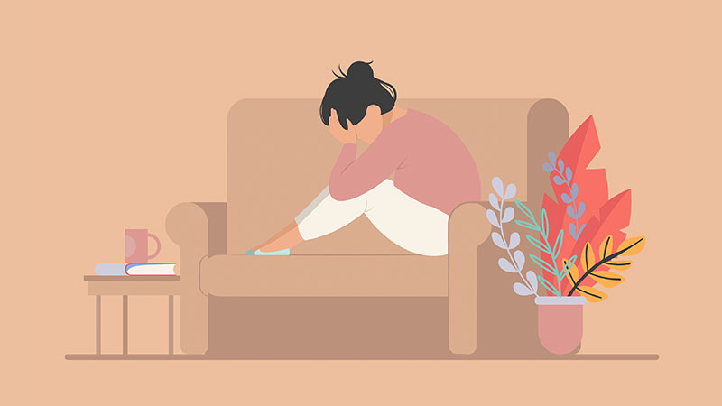
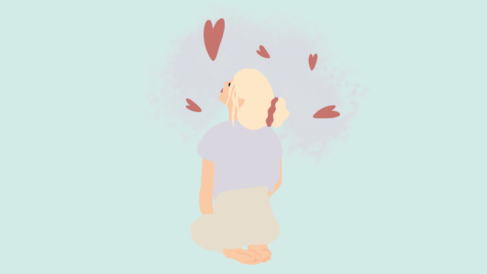

Bienvenidos a mi blog, donde intentaré compartirles articulos informativos sobre temas relacionados a la psicologia y/o recomendaciones
Acrofobia: Sintomas y tratamiento
Resiliencia: Significado y ejemplos
Ansiedad y depresión: Diferencias entre una y otra
Apego emocional: Cómo identificarlo
Somatizar: Cuando la emoción afecta al cuerpo
Trastorno de despersonalización: Como identificarlo y tratamiento
Recomendaciones de libros